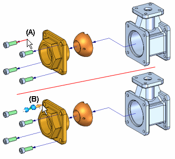
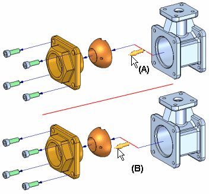
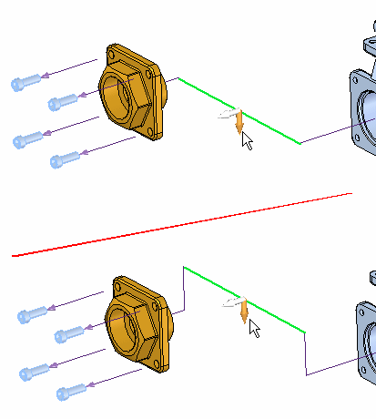
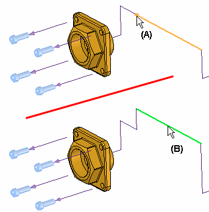
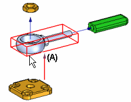
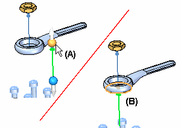
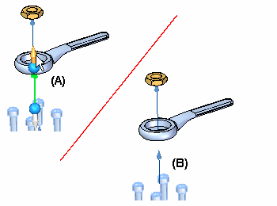

Draw command (flow lines)
Draws flow lines between two selected parts.
-
You can change the length of a flow line by editing the end point position of either end of the flow line.
-
You can change the location of a joggle segment on a flow line.
-
You change the location of the entire flow line.
Changing Flow Line Length
You change the length of the flow line by selecting it at the end you want to edit (A), then drag the cursor to the new position you want (B). This method is the same for event flow lines and annotation flow lines.

Changing Joggle Segment Position
If the Drag Component command is used to move the part outside of the original explode vector, a joggle is added to the flow line. For event flow lines, you can use the Modify command to drag the joggle segment (A) to a new position (B).

For annotation flow lines, the mid segment can be moved along two axes.

Annotation flow lines can be broken into segments (A) by the modify command, and each segment moved to a desired location (B).

Changing Event Flow Line Location
The location and length of an event flow line is determined automatically by using the range box of the parent and child parts. The event flow line terminator end originates at the center of the range box on the parent part. (A) The range box is the theoretical 3D envelope that the solid body is contained within. For some parts, you may want to change the event flow line location.

To relocate an entire event flow line, click the handle at one end of the event flow line (A), then click an edge or face that you want to connect that end of the event flow line to (B). The event flow line remains the same length and orientation after it is relocated.

The event flow line position is updated (A). You may also want to change the event flow line length so you can better view the event flow line terminator (B) in the current view orientation. Select the flow line handle (A) and drag to the desired position (B).

Other Flow Line Operations
You can also perform the following actions on flow lines:
-
To display or hide flow line terminators, set or clear the Flow Line Terminators command on the View menu.
-
To display or hide all flow lines, set or clear the Flow Lines command on the View menu.
-
To display or hide an individual flow line, select the part in the graphic window or PathFinder, then click the Show Flow Lines or Hide Flow Lines commands on the shortcut menu.
-
To delete a joggle segment on a flow line, select the proper event in the Explode PathFinder tab, then click the Delete command on the shortcut menu. This has the same effect as using the drag command to move the part back within an earlier explode vector.
-
When you collapse a part with the Collapse command, the flow line is deleted.
The Show Flow Lines and Hide Flow Lines commands are also available on the shortcut menu when you select an explode event in the Explode PathFinder tab.
You can only select flow lines in the graphics window with the Edit Flow Lines command, or in the Explode PathFinder tab with the Select Tool.
How do I
Explode an assembly automaticallyExplode individual parts in an assembly
Reposition a Part in an Exploded Assembly
Remove a part from an exploded assembly
Collapse a part in an exploded assembly
Drag an exploded part in an assembly
Unexplode an Assembly
Keep a subassembly intact when exploding
Unbind a subassembly
Drop flow lines
Display or Hide Flow Lines in an Exploded Assembly
Add Events to or Remove Events from an Event Group
Learn more
Creating exploded views of assembliesLook up more details
Auto-Explode commandAutomatic Explode command bar
Automatic Explode Options dialog box
Explode command
Explode command bar
Manual Explode Options dialog box
Explode PathFinder tab
Explosion Properties dialog box
Reposition command
Reposition command bar
Remove command (Explode application)
Collapse command
Drag Component command
Drag Component command bar
Unexplode command
Bind Subassembly command
Unbind Subassembly command
Draw command bar
Modify command
Modify command bar
Flow Lines command
Flow Line Terminators command
Show Flow Lines Command
Hide Flow Lines Command
Remove Event from Group Command
Add Event to Group Command
Display Configuration Options dialog box